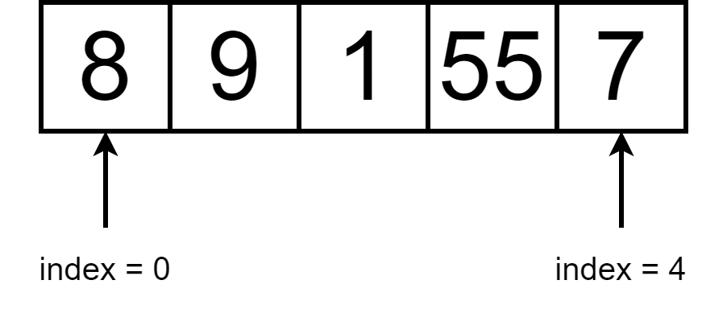
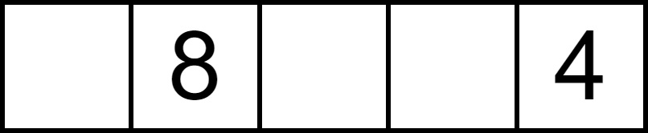
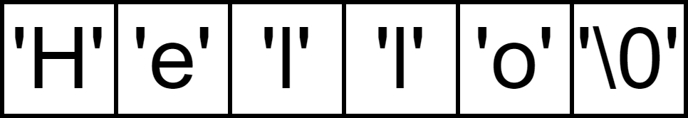

class: center, middle # Programmation procédurale : # les tableaux <img height="200px" src="img/logo.png"> --- ## On parle de quoi ? 1. <a href="UAA11-ch4.html#3">Qu'est ce qu'un tableau ?</a> 2. <a href="UAA11-ch4.html#4">Déclaration</a> 3. <a href="UAA11-ch4.html#7">Initialisation</a> 4. <a href="UAA11-ch4.html#8">Lecture/Impression</a> 5. <a href="UAA11-ch4.html#10">Chaînes de caractères</a> 6. <a href="UAA11-ch4.html#14">Tableaux et constantes symboliques</a> --- ## Qu'est-ce qu'un tableau ? Un tableau est un **ensemble d'éléments successifs** en mémoire centrale accessibles via un **index**.  --- ## Déclaration Un tableau est caractérisé par : * une taille maximale (définie à l'avance) * un nom * un type ```c void main (void){ int monTableau[5]; } ``` --- ## Déclaration ```c void main (void){ int monTableau[5]; monTableau[1] = 8; monTableau[4] = 4; } ```  --- ## Déclaration Une fois qu'un tableau a été déclaré, **sa taille ne peut plus changer**. ```c void main (void){ int monTableau[] = {17, 8, 2, 2, 4}; monTableau[5] = 10; // erreur ! } ``` → `sizeof` donne la taille du tableau (le nombre d'octets réservés en mémoire) ```c void main (void){ int monTableau[10]; monTableau[5] = 10; int nbOctets = sizeof(monTableau); int taille = nbOctets / sizeof(int); } ``` --- ## Initialisation L'initialisation d'un tableau peut se faire : * directement avec la déclaration ```c void main (void){ int monTableau[] = {0, 0, 0, 0, 0}; } ``` → <span style="color:red;">l'ordinateur réserve automatiquement le nombre d'octets nécessaire</span> * avec une répétitive ```c void main void(){ int monTableau[5]; for(int i = 0; i < 5; i++) monTableau[i] = 0; } ``` → <span style="color:red;">la taille doit être spécifiée explicitement</span> → <span style="color:red;">il n'existe pas de valeur par défaut !</span> --- ## Lecture ```c void main (void){ int monTableau[5]; for(int i = 0; i < 5; i++){ printf("Entrez le nombre %d :\n", i + 1); scanf_s("%d", &monTableau[i]); } } ``` --- ## Impression ```c void main (void){ int monTableau[5]; // le tableau se remplit... int taille = sizeof(monTableau) / sizeof(int); for(int i = 0; i < taille; i++){ printf("Nombre %d : %d\n", i + 1, monTableau[i]); } } ``` --- ## Chaînes de caractères En C, il n'existe pas de type "chaine de caractères" (comme le type `String` en Java par exemple). En C, un chaine de caractère est stockée sous la forme d'un **tableau de caractères**. Une chaîne de caractère se termine **toujours** par le caractère de fin de chaine `\0` (code 0 de la table ASCII). Lors d'une déclaration sans taille spécifiée, l'ordinateur réserve automatiquement le nombre d'octets nécessaires (moyennant une assignation directe). ```c // comme ça char maChaine[] = "Hello"; // ou comme ça char maChaine[] = {'H', 'e', 'l', 'l', 'o', '\0'}; ```  --- ## Chaînes de caractères On peut également spécifier explicitement la taille de la chaine. ```c // comme ça char maChaine[7] = "Hello"; // ou comme ça char maChaine[7] = {'H', 'e', 'l', 'l', 'o', '\0'}; ``` <span style="color:red">Attention</span> : il faut toujours prévoir un octet supplémentaire pour le stockage du `\0` ! ```c char maChaine[7] = "Hello"; // ok char maChaine[6] = "Hello"; // ko ! char maChaine[8] = "Hello"; // ok ``` --- ### Lecture * avec `scanf_s` ```c scanf_s("%s", maChaine, 100); ``` * avec `gets_s` ```c gets_s(maChaine, 100); ``` ### Impression * avec `printf` ```c printf("%s", maChaine); ``` * avec `puts` ```c puts(maChaine); ``` --- ### Fonctions utilitaires Ces fonctions prédéfinies se trouvent `string.h` ou `stdlib.h`. * `int strlen(chaine)` : donne la taille de la chaine de caractères * `strcpy(chaineDestination, tailleChaine , chaineSource)` : copie une chaine de caractères dans un tableau * `strcat(chaineDestination, tailleChaine , chaineSource)` : concatène deux chaines de caractères * `int strcmp(chaine, autreChaine)` : compare deux chaines de caractères --- ## Tableaux et constantes symboliques Une **constante symbolique** permet de **remplacer**, dans le code, **des constantes par un texte significatif**. La déclaration d'une constante symbolique se place toujours : * au début du code source (fichier avec l'extension `.c`) ou * dans un fichier d'en-tête ("header file", un fichier avec l'extension `.h`). Le syntaxe est : ```c #define MA_CONSTANTE valeur ``` Exemple : ```c #define TAILLE_NOM 100 #define NB_COURS 10 void main (void){ char nom[TAILLE_NOM]; char deuxiemeNom[TAILLE_NOM]; int codeCours[NB_COURS]; } ``` --- ## Un exemple final ```c #include <stdlib.h> #include <stdio.h> #include <string.h> #define TAILLE_MDP 50 void main(void) { char mdp[TAILLE_MDP] = "INDBG2022"; char mdpUtilisateur[TAILLE_MDP]; int longueur = strlen(mdp); int taille = sizeof(mdp); // sizeof(char) = 1 printf("Longueur : %d\nTaille: %d\n", longueur, taille); printf("Entrez votre mot de passe :\n"); gets_s(mdpUtilisateur, TAILLE_MDP); if (strcmp(mdp, mdpUtilisateur) == 0) puts("Mot de passe correct !"); else puts("Erreur : mot de passe incorrect"); strcpy_s(mdpUtilisateur, TAILLE_MDP, mdp); puts(mdpUtilisateur); strcat_s(mdp, TAILLE_MDP, "2014"); puts(mdp); } ```